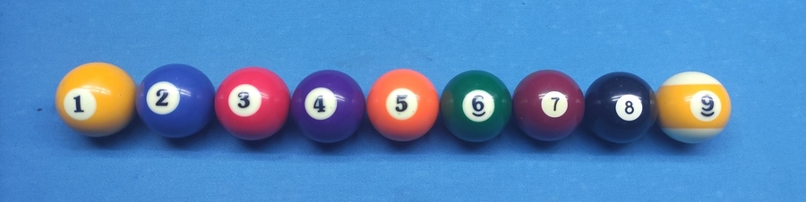
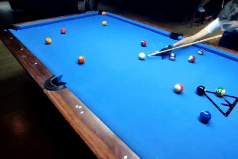
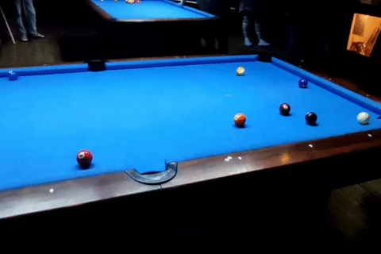
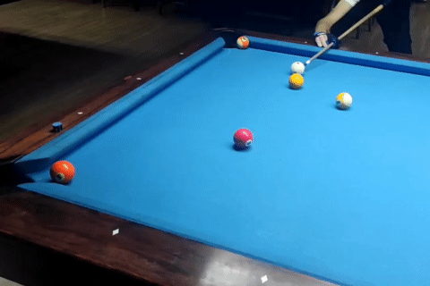
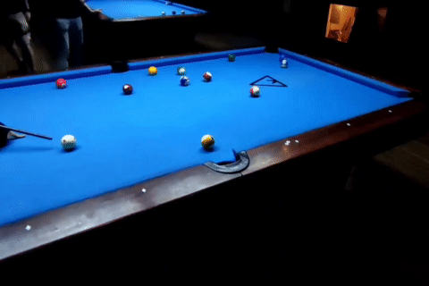

The Rules: 9-ball
Welcome to my guide on the rules of 9-ball, a thrilling cue sport that first originated in the early 1900s in the United States. With its fast pace and emphasis on strategy, 9-ball has gained immense popularity in both amateur and professional circles and is played in pool halls and tournaments worldwide.
How to play?
In 9-ball, the game is played with nine object balls numbered 1 through 9, and the goal is to sink the 9 ball before your opponent does. The balls must be pocketed in numerical order, and any ball that is legally pocketed allows the player to continue shooting. The game is won by the first player to make the 9 ball legally.
Break
Breaking the rack is an important part of pool: on the professional level, a nice break shot is often the key to winning a game. A legal break shot in 9-ball is done by placing the cue ball anywhere behind the head string and hitting the rack in a way that at least 4 balls from it touch the rail. Just like in 8-ball, making balls on the break lets you keep shooting. There is more to it: making the 9 on the break is a game win [1]. Pro Tip: Due to the way physics affect balls, players most of the time break a 9-ball rack from the corner, i.e. from a point close to either long rail. That way you can make more balls on the break and get a better layout.

Three-point rule.This is a relatively new break complication that some billiard federations have adopted, especially in Europe. It says that in order to stay at the table after the break, a player should do one of the following: 1) make 1 ball and get 2 other balls to cross the head string; 2) make 2 balls and get 1 other ball to cross the head string; 3) make 3 balls.
Push out
In order to make the game fair, the shooting player has a push-out option right after the break. If they decide to use it, the player needs to call push out
or push
and then they can perform any kind of shot they desire, without having to hit the 1 ball. After a push-out, the incoming player can either take the position and shoot or give the turn back to their opponent. This can be useful to avoid a foul when you are stuck behind other balls after the break. Pro Tip: Think how you can use push-out to trick your opponent into giving you a nice layout.
Fouls
Every game in pool has the concept of foul, or an illegal shot. There is always a penalty charged to the player who fouled, and the opponent gets some kind of advantage. Let’s look at all possible foul cases in 9-ball:
-
Just like in most games of pool, pocketing the cue ball is a foul (it’s called a scratch). The opponent gets
ball in hand
and places the cue ball anywhere on the table for their next shot. -
Another type of foul is hitting a wrong ball with the cue ball. Since in 9-ball you have to make balls in order, hitting any ball other than the lowest on the table is a foul. The opponent gets ball in hand.
 -
If a player touches any ball on the table [2] with their cue stick, hand, apparel, or any object other than the cue tip, it is ball in hand for the opponent.
 -
If any ball flies off the table, it is ball in hand. Any object ball driven off the table stays in the pocket and doesn’t get spotted [3].
 -
No rail after the shot. If none of the balls touches at least one rail after the contact, and nothing is pocketed, the shot is considered illegal. Ball in hand.

Flukes
Another thing to keep in mind is accidentally pocketed balls, or flukes. In 9-ball, any fluked ball stays in the pocket and lets the shooting player continue their turn. That means 9-ball is NOT a call shot game, which is good news. The 9 is not an exception! This rule makes 9-ball arguably the luckiest game in pool.
Safety
All possible shots in pool games can be divided into 2 categories: offensive and defensive shots. It is important to know when and how to use both in order to win more games. Defensive shots are usually called safeties or playing safe. If a player decides to play safe, they don’t go for a pot [4], but rather try to put the cue ball in an awkward or uncomfortable position for their opponent. In 9-ball, you will often want to hide the cue ball behind other balls so that your opponent can’t see the lowest ball to hit.
Three-foul rule
This is a special rule used only in 9-ball and 10-ball. It’s actually self-explanatory: if a player performs three foul shots in a row, they lose the game. However, this rule is also subject to the tournament director’s decision. Some event formats don’t enact the three-foul rule.
Racking
Depending on the tournament rules there can be two ways to rack a 9-ball: with 1 ball on the spot, or 9 ball on the spot. Generally, most amateur tournaments in the USA have the players rack 1 ball on the spot. Professional events, on the other hand, like Matchroom Nineball Tour use the 9-ball-on-the-spot format.
Example Rack
Now that you are familiar with the rules, it’s time to try 9-ball. I hope you enjoy this game!
References
- That can depend on the tournament rules. Some directors will cancel the 9-on-the-break rule and have the players spot it back instead.
- Different tournaments may have 2 variations of this rule: it is either
all ball fouls
(when ball in hand is given for any illegal touch), orcue ball fouls
(when ball in hand is only given in case of touching the cue ball on accident). - To spot a ball means to take it out of a pocket and put it on the spot (the middle mark on a pool table located where the second diamond lines cross)
- Pot – a short term for making or pocketing a ball. The act of making a ball is referred to as pot.